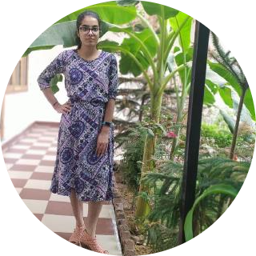

|
 |
Palaksha SoniLearner | Student | Web Developer MasakaliPassionate Learner, knowledge seeker, enthusiast to explore the new technologies that will solve |
Email: sonipalaksha@gmail.com Phone Number: 8824340233 Address: Alwar,Rajasthan LinkedIn: linkedin.com/in /palaksha-soni-5a0468202/ Github: github.com/Palaksha2407 Twitter: twitter.com/ PalakshaSoni?s=09 |
EDUCATIONBirla Institute of Technology, Mesra, Ranchi, JaipurComputer Science Engineering11/2020 - 05/2024 Senior Secondary EducationSri Guru Harkrishan Public School, Alwar, Rajasthan04/2018 - 03/2019 Secondary EducationSri Guru Harkrishan Public School, Alwar, Rajasthan04/2016 - 03/2017 |
SKILLSC | Intro to Java Python HTML | CSS Data structures | Algorithms Web Development JavaScript |
WORK EXPERIENCECoordinatorTechnical Committee (01/2021 - Present)
|
LANGUAGESEnglish Full Professional Proficiency Hindi Native or Bilingual Proficiency INTERESTSCreative Writing Astronomy Painting Music Reading Books |
CERTIFICATESContributor (GWOC'21) Authorized by GirlScript Foundation in collaboration with Google Introduction to Python Offered by Coding Ninjas Data Structures and Algorithms Authorized by GirlScript Foundation and offered by Education Outreach Program Web Development Authorized by GirlScript Foundation and offered by Education Outreach Program Java Script Course Authorized by GirlScript Foundation and offered by Education Outreach Program |
ACHIEVEMENTSGirlscript Winter of Contribution Contributor(GWOC'21) (09/2021 - 12/2021) Contributor at the GirlScript Winter of Contribution 2021 in collaboration with Google and will be contributing through documents. Google Talentsprint WE Scholar (WE Program by Talentsprint Cohort 3) (2021) Selected in the top 200 participants (among 24500 participants) from all over India for a two year professional training program by Talentsprint, supported by Google. 4th in Save Earth Inter-School Competition (2018) Scored 4th position in Inter-School competition based on the topic ''How can we Save Earth through building new technologies at a feasible and accessible level? '' 1st in Science Olympiad (2016) 1st in class and 31st in city |